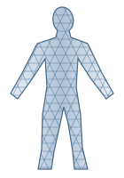
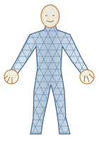
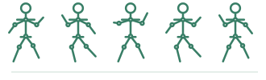

SMPL
2015参数化 3D 人体表示
Shape β + Pose θ
→ 3D Human Mesh
6,890 Vertices→ 3D Human Mesh

From Representation to Datasets and Motion Estimation
参数化 3D 人体表示

扩展身体、手部与面部

统一多来源 MoCap，转换为参数化人体运动表示，
为下游 Motion Learning 提供训练数据。

早期公开 Motion–Language 数据集
整段运动对应自然语言描述
基于 AMASS 添加动作标签
时间对齐的 Action Semantics
扩大 Motion–Text 配对规模
14,616 Motion · 44,970 Text
自动标注序列语义与逐帧全身姿态
Video-LLaMA / PoseScript / Hand Rules
GPT-4V 改善序列文本
新增 Audio / Video 配对模态
视频特征经时序回归恢复 SMPL；AMASS 提供非配对真实运动，训练判别器以约束运动自然性。
在 AMASS 上学习状态转移先验；测试时优化运动潜变量与人体参数，使恢复的运动符合观测与先验。
VIBE：Direct Regression ｜ HuMoR：Motion Prior + Test-time Optimization